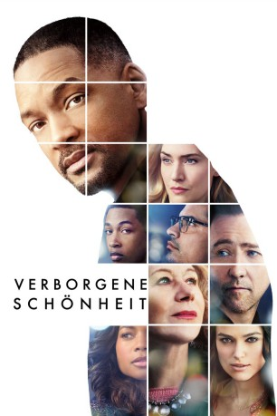

#6011 Verborgene Schönheit
Alternativ: Collateral Beauty
 
 IMDB-Wertung: 6.8 / 10
IMDB-Wertung: 6.8 / 10  Metascore: 0
Metascore: 0 
Howard Inlet (Will Smith) hat eigentlich alles wovon er immer geträumt hat. Als aber eines Tages eine schreckliche Tragödie vor seinen Augen stattfindet, verfällt der New Yorker in eine tiefe Depression und sein Leben gerät immer mehr aus den Fugen. Schließlich fängt Howard in seiner Verzweiflung sogar an, Briefe an die verschiedensten abstrakten Dinge und Konzepte zu schreiben. Wenigstens hat der Werbefachmann Mitarbeiter und Freunde (u.a. Edward Norton, Kate Winslet und Michael Pena), die sich um ihn sorgen und gar nicht daran denken, ihren Chef seiner Trauer zu überlassen. Doch eine Besserung von Howards Zustand tritt erst auf, als drei besondere Figuren in sein Leben treten: Der Tod (Helen Mirren), die Zeit (Jacob Latimore) und die Liebe (Keira Knightley), die allesamt Briefe von ihm erhalten haben, suchen ihn auf...
Jahr: 2016
Dauer: 96 Minuten
FSK: 6
Land: USA Studio: Warner Bros.Tonspuren: DD5.1 - ,
Untertitel: Deutsch,
Auflösung: 1080p (1920x800) Größe: 4177 MB
Genre: Drama, Liebe
Regisseur: David Frankel
Drehbuch: Chris Columbus
Soundtrack:
Darsteller:
 Will Smith als Howard
Will Smith als Howard Edward Norton als Whit
Edward Norton als Whit Kate Winslet als Claire
Kate Winslet als Claire Michael Peña als Simon
Michael Peña als Simon Helen Mirren als Brigitte
Helen Mirren als Brigitte Naomie Harris als Madeline
Naomie Harris als Madeline Keira Knightley als Amy
Keira Knightley als Amy Jacob Latimore als Raffi
Jacob Latimore als Raffi Ann Dowd als Sally Price
Ann Dowd als Sally Price Liza Colón-Zayas als Trevor's Mom
Liza Colón-Zayas als Trevor's Mom Natalie Gold als Adam's Mom
Natalie Gold als Adam's Mom Kylie Rogers als Allison
Kylie Rogers als Allison- Shirley Rumierk als Simon's Wife
- Alyssa Cheatham als Olivia
- Benjamin Snyder als Sally's Grandson
- Mary Beth Peil als Whit's Mother
- Andy Taylor als Father with Photo
- Michael Cumpsty als Chairman of the Board
- Joseph Castillo-Midyett als Teacher, Mexican Commercial
- Bryan Terrell Clark als Homeless A Capella Singer
 Jimmy Palumbo als Super
Jimmy Palumbo als Super- Elia Monte-Brown als Support Group Member
- Suzy Jane Hunt als Support Group Member
- Claire Glassford als Junior Executive
 Maureen Mueller als Board Member
Maureen Mueller als Board Member- Steven Hauck als Board Member
- Robert 'Toshi' Kar Yuen Chan als Board Member
 Willie C. Carpenter als Board Member
Willie C. Carpenter als Board Member- Jabriah Anderson als Marymount Student , uncredited
- Reginald L. Barnes als NYC Tourist , uncredited
- Emily Bennett als Restaurant Patron , uncredited
 Liz Celeste als Ice Skater , uncredited
Liz Celeste als Ice Skater , uncredited- Carlos Clemenz als Ad Agency Employee , uncredited
- Ethan Coskay als Kid Ice Skater , uncredited
- William Currid als Farm Market Kid , uncredited
 Laura Hart als Passerby , uncredited
Laura Hart als Passerby , uncredited- Ayden Hernandez als Julian , uncredited
 Agron Karameti als Yardsham / Inlet Employee , uncredited
Agron Karameti als Yardsham / Inlet Employee , uncredited- Jordana Keller als Catholic School Girl , uncredited
- Madeline Lupi als Marymount Student , uncredited
 Inna Muratova als Woman , uncredited
Inna Muratova als Woman , uncredited Enrique Murciano als Stan , uncredited
Enrique Murciano als Stan , uncredited Toshiko Onizawa als Subway Passenger , uncredited
Toshiko Onizawa als Subway Passenger , uncredited- Lily Peterson als Marymount Student , uncredited
- Rebecca Ruber als Auditioning Actress , uncredited
- Jesse Ray Sheps als Dylan , uncredited
 Nancy Ellen Shore als Restaurant patron , uncredited
Nancy Ellen Shore als Restaurant patron , uncredited George J. Vezina als Dog Owner in Park , uncredited
George J. Vezina als Dog Owner in Park , uncredited- Jonathan Rivera Morales als Monster, Mexican Commercial
- Marcus Paul James als Homeless A Capella Singer
Datei: X:\2016(N-Z)\Verborgene Schönheit (2016, FSK6, 1920x800).mkv seit 20.04.2017
Festplatte: HD 2016(A-Z)
 Es gibt insgesamt 182 Filme in der Gruppe '2016(N-Z)'
Es gibt insgesamt 182 Filme in der Gruppe '2016(N-Z)'